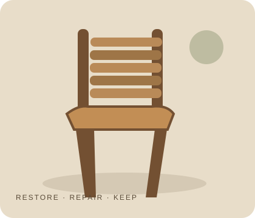
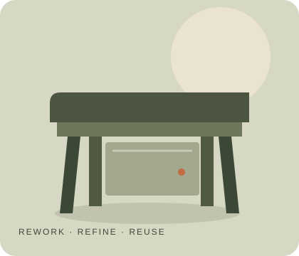
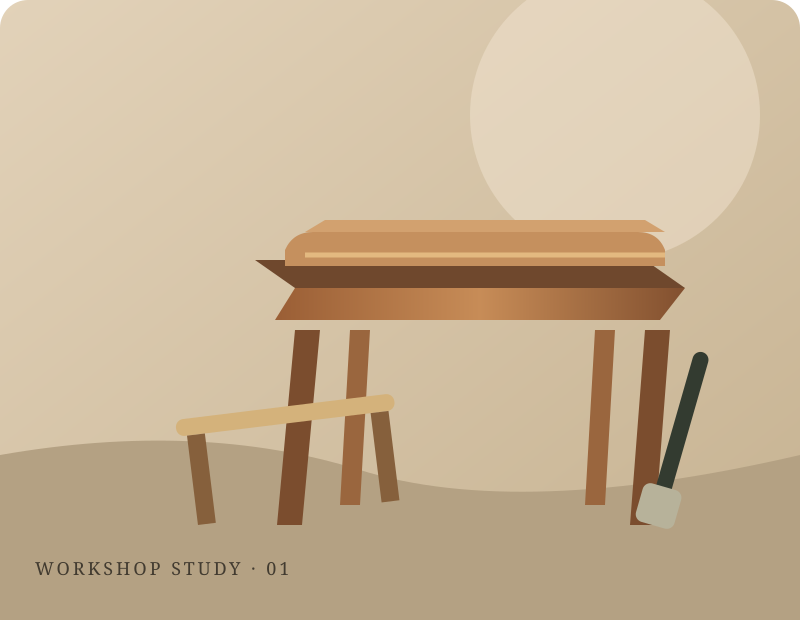

RESTORED · FICTIONALThe Sunday Chair
Loose joints repaired, finish softened, silhouette retained.
 STILLWOODFURNITURE ATELIER · LUSAKA
STILLWOODFURNITURE ATELIER · LUSAKA03 / THE WORK
Imagined workshop projects. The pieces and client stories are fictional, created to show the work we take on.

RESTORED · FICTIONALLoose joints repaired, finish softened, silhouette retained.
 CUSTOM · FICTIONAL
CUSTOM · FICTIONALA table designed around a compact open-plan home.

REWORKED · FICTIONALA console reimagined with a lighter finish and simpler hardware.

CUSTOM · FICTIONALA compact side table with a lower shelf and hand-finished edges.
Project stories are invented. Illustrations are original vector artwork, not photos of completed jobs.